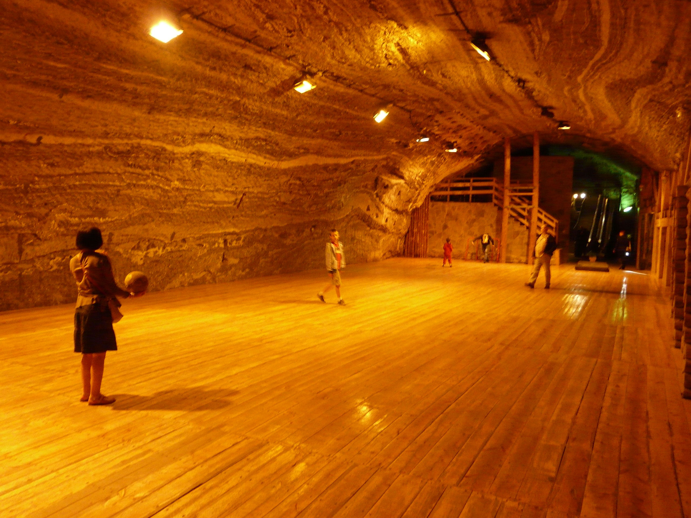

Soľné bane
Okrem výtvarného umenia s použitím soli sú aj bývalé soľné bane dnes dôležitým reprezentantom soli v umení, keďže častokrát slúžia ako múzeá a sú plné soľných umeleckých diel.
Soľná baňa Wieliczka
Soľná baňa Wieliczka sa nachádza v južnej časti Poľska, neďaleko Krakova. Baňa vznikla v 13. storočí, no kuchynská soľ sa tam ťažila až do roku 2007, aj keď komerčná ťažba soli prestala v roku 1996 v dôsledku záplavy bane a klesajúcich cien soli. Dnes je súčasťou svetového kultúrneho dedičstva UNESCO, je otvorená pre verejnosť a slúži ako múzeum. Medzi najväčšie turistické lákadlá patrí množstvo sôch a štyri kaplnky vytvorené baníkmi a rôznymi umelcami z kamennej soli.

Kaplnka sv. Kingy vytesaná do kamennej soli
|

Socha pápeža Jána Pavla II. vytesaná z kamennej soli
|
|
Luster zo soľných kryštálov
|
Šachta sv. Kingy
|
Soľná baňa Bochnia
Soľná baňa Bochnia sa nachádza v južnej časti Poľska, neďaleko bane Wieliczka. Hoci je to jedna z najsatších soľných baní na svete, do zoznamu UNESCO bola pridaná až v roku 2013 a odvtedy sú spolu s Wieliczkou zapísané ako "Kráľovské soľné bane Wieliczka a Bochnia". Soľ sa tu ťažila od 12. storočia až do roku 1990, kedy bola ťažba ukončená a dnes slúži baňa len ako múzeum pre verejnosť.
|
Kaplnka sv. Kingy vytesaná do kamennej soli
|
Socha vytesaná z kamennej soli
|
|
Hala Wazyn, najväčší podzemný priestor v bani
|

Osvetlená hala Wazyn
|